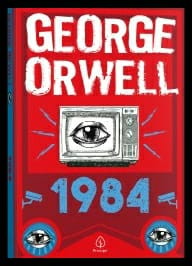

| As obras revolucionárias de George Orwell - Box |
A REVOLUÇÃO DOS BICHOS: Uma fazenda é tomada por seus animais maltratados e sobrecarregados. Cheios de idealismo, eles se propõem a criar um paraíso de progresso, justiça e igualdade, administrando o local por conta própria. Os porcos, então, assumem o comando e, com suas habilidades de alfabetização, vão aos poucos mudando as regras que os animais haviam estabelecido previamente. Dessa forma o palco está montado com uma crítica muito bem escrita de como os ideais socialistas são corrompidos por pessoas poderosas, como as massas iletradas são aproveitadas e como os líderes comunistas se transformam em capitalistas. |
1984:  Entre os textos inspiradores do século XX, 1984 é uma obra rara, que fica mais assustadora à medida que sua trama se torna mais real a cada dia que passa. Publicado em 1949, o livro oferece a visão de pesadelo do satírico político George Orwell de um mundo totalitário e burocrático e uma tentativa pobre de encontrar a individualidade. O brilho do romance é a previsão sobre o futuro, sobre a vida moderna: a onipresença da televisão, a distorção da linguagem, o engano oficial, a manipulação da história por um regime totalitário. A visão de mundo de Orwell é sombria e mostra-nos o pesadelo autoritário alcançado: um tributo à vigilância e ao controle. |
DENTRO DA BALEIA E OUTROS ENSAIOS: Sarcástico, engraçado e implacável: a inteligência e o charme de Orwell são excepcionalmente incríveis neste livro. Em nove ensaios o autor usa a veracidade como sua única estrela. Sua contribuição literária veio durante uma era desesperadora e nos ajudou a navegar nos nos sem trilhas do pós-guerra. Entre eles, “Dentro da baleia” é um ensaio em três partes escrito por George Orwell em 1940, em que se vê um discurso amplo sobre a literatura inglesa nas décadas de 1920 e 1930. A história bíblica de Jonas e a baleia é usada como uma metáfora para aceitar a experiência sem procurar mudá-la. |
|
| R$29,90 |